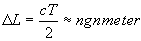
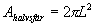
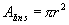
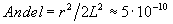
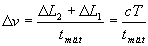
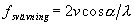
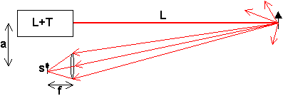

Lasermätteknik
När laser kom i början på 60-talet var det användningsområde (förutom vetenskaplig foskning) man såg framför sig enbart att strålen skulle kunna användas militärt för att med den värme som utvecklas när ljuset absorberas kunna förstöra saker och ting. Sedan dess har många andra tillämpningar etablerats och blivit vanliga. CD'n, laserskrivaren, telefoni över optisk fiber och små pekpinnelasrar är bara några exempel.
Men ett område som verkligen revolutionerats är optiska mättekniker av olika slag. Av dessa är förståss avståndsmätning den mest näraliggande.
I praktiskt bruk finns här huvudsakligen två tekniker:
Pulstidmätning och Lasertriangulering.
Pulslöptidsmätning en innebär att man klockar hur lång tid en puls tar på sig för att gå till mätobjetet och tillbaka. Upplösningen i en sådan mätning ges den längsta av pulslängden, T, och detektionssystemets svarstid. I de flesta fall (med
Q-switchad laser exvis) ligger denna tid runt ngt tiotal ns. Räknat i längd blir då felet i mätningen Obs att detta fel är oberoende av avstånd, dvs på 10m avstånd är felet 10% och på 500m avstånd 0.2%!Instrumentets räckvis ("hur långt laser når") beror inte på hur långt strålen tar sig. Vi vet ju sedan tidigare att strålen kan nå åtskilliga km utan att bli större än enstaka cm. Begränsningen ligger i stället i att ljuset efter reflektion mot en matt yta (gran, stridsvagn, flygplan) sprids i alla riktningar dvs i en halvsfär. Om målet är försett med laserreflektor minskas spridningsvinkeln till ngt tiotal mrad dvs en tiotusendel av en halvsfär. Hur stor andel av detta ljus som detektor med exentuell lins kan samla in beror av avstånd, L, linsens (eller detektorns) radie r:
Ljuset sprids över en yta , medan linsen har en yta av 

Det numeriska värdet gäller en lins med radie 3cm och avst 1km. Av en utsprunglig puls på 10mJ kam man alltså räkna med att samla in 5pJ. Vilket ligger nära undre gränsen för vad en detektor kan se. På stationära anläggningar kan man kanske öka linsradien ngt, men annars finns inte så mycket att göra. Dessutom kanske målet är så eländigt att det inte är kritvitt, dvs att det absorberar en del�.
Nivå 1
fortsätter längre ner !! (Trodde ni slapp nu va�?)Pulsekon för hastighetsmätning (nivå 2)
Man mäter i detta fall inte hastighet direkt, utan avstånd vid två tidpunkter, definerar skillnaden däremellan som förflyttning och delar sedan med tiden mellan mätningarna (=mättiden). Detta ger oss ett fel i hastigheten på:
 dvs ju längre man kan mäta ju bättre noggrannhet får man. En oceanångare, där man kan mäta under 10s kan man mäta med ett fel av bråkdelar av 1m/s, men ett stridflygplan�.. Om mättiden är 0.1s blir det inte bättre än tiotals till hundratals m/s. Detta kan naturligtvis pressas med kortare pulser, snabbare detektorer osv, men i detta härad ligger det!
Riktigt katastrofalt blir det om man försöker beräkna en acceleration genom att mäta två hastigheter, dvs tre avstånd. Skillnaden mellan de två hastigheterna delas sedan med mättiden och då får man accelerationen. Felet i den blir då summan av två hastighetsfel delat med mättiden, dvs flera g!
För mer krävande hastighetsmätningar används i stället dopplereffekt där man får en frekvensändring på det reflekterade ljuset som kan mätas genom att blanda detta med en liten del av det utsända och sedan registrera de svävningar man får vid blandningen. Denna svävningsfrekvens blir där a är vinkeln mellan objektets rörelse och observationsriktningen. Denna kan kombineras med en avståndsmätning om det ljus som sänds ut pulsas på lämpligt sätt (sågtand)
Lasertriangulering (nivå 1 igen)
Vi lasertriangulering används inte löptiden för att mäta avståndet utan vad man gör är egentligen att mäta basen i en mycket spetsig triangel vars spets ligger vid målet. Principen ser ut som i figuren:

Man belyser objektet så att en spot bildas på den. Det ljus som återkastas samlas ihop av en lins mot en detektor som är positionskännande, dvs känner var ljusets tyngdpunkt ligger. Denna kommer att ligga i förlängningen av den stråle som går genom mitten av linsen (se
konstruktionreglerna för tunna linser), vilket innebär att den lilla triangeln s/f kommer att vara likformig med den stora a/L, dvs L=af/s.Upplösningen i denna mätning kommer (
visas i nivå 3 ) att kunna ligga på dm på 100m mätavståndTill
nästa kapitel (Vågoptik) (enbart nivå 2+3)Till
nästa nivå-1 kapitel (Modern optronik)Till
innehållsförteckningen